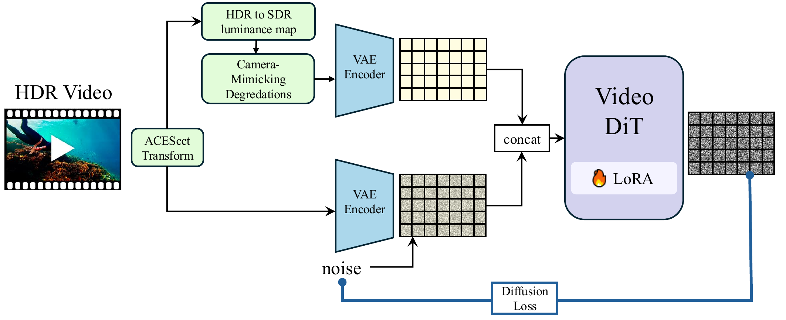
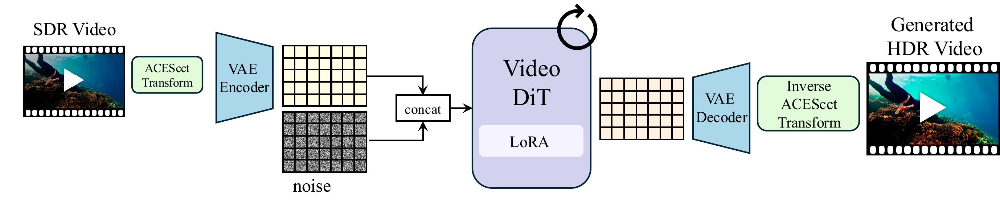

SDR to HDR · BT.2020 HLG
1Lightricks 2Gear Productions 3Tel Aviv University
Best on HDR display.
Video
SDR → HDR at normal exposure. Click a tile to expand.
Stills
SDR → HDR on still imagery. Click a tile to expand.
LumiVid: ACEScct EXR → Rec.709 × 2EV → BT.2020 HLG. Tedla et al.: official 17-frame 704×1280 recipe; holds its last frame while the other method continues. HDRTVNet++: frame-wise, stacked to video. DiffHDR: official recipe, Rec.709-linear EXRs. SDR stays Rec.709 SDR. Missing files show a red tag.
No augmentation, blur only, and the full model.
LumiVid is the paper model. The VAE decoder never runs the video DiT: it can lift exposure, and it does not restore highlight detail or hold time. Pull to EV −3 for highlights and EV +3 for shadows.
Abstract
High dynamic range (HDR) video captures continuous scene radiance essential for professional color grading and post-production workflows, yet generative video diffusion models remain bound to 8-bit standard dynamic range (SDR) formats. Existing adaptation methods either alter the VAE latent space or rely on auxiliary inputs like luminance masks, text prompts, or external reference images. However, relying on auxiliary inputs introduces manual overhead, makes the exact prompt hard to guess, and yields less stable results that often fail to remain consistent with the original footage. We present LumiVid, a framework that generates HDR video directly from a single SDR input, without requiring masks, text prompts, or external reference images. Key to our method is mapping the HDR video into a logarithmic color space representation, aligning high-magnitude radiance with the existing latent space of a frozen video VAE without losing luminance details. Fine-tuning a dual-canvas LoRA adapter on just 300 synthetic paired clips enables data-efficient SDR-to-HDR translation while preserving temporal consistency. To prevent shortcut pixel copying during training and force the model to infer missing radiance and details from its learned priors, we introduce camera-mimicking condition degradations on the SDR reference input. Extensive evaluations show that LumiVid outperforms state-of-the-art baselines by +5.5 dB PU21-PSNR on cinema-grade ARRI footage, producing high-fidelity half-float EXR video with exceptional re-exposure latitude across extreme exposure pulls.
Method

